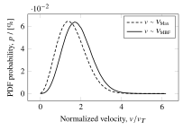
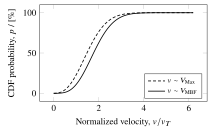

Velocity Distributions
ExESS has build-in energy and velocity distributions that are used to draw random velocities for various processes.
For further information, please refer to Smolka (2022).
A total of two different velocity distributions are implemented, the Maxwell-Boltzmann and the Maxwell-Boltzmann Flux distribution. Both are used to randomly draw a velocity vector based on the thermal energy available to a particle of a certain mass. In one-dimensional form, the former can be expressed as
\[f(v) = \sqrt{\frac{m}{2 \pi k_B T}} \exp \left( - \frac{m |v|^2}{2 k_B T} \right)\]
which is directly related to a Gaussian distribution with mean zero and variance $\frac{k_B T}{m}$ Crider and Vondrak (2002). The extension to three dimensions is the product of all three normal distributions $f(v_x, v_y, v_z) = f(v_x) f(v_y) f(v_z)$, leading to velocity components that can be directly drawn from a scaled up normal distribution
\[v_i = \sqrt{\frac{k_BT}{m}} \cdot \mathcal{N}(0, 1).\]
The latter distribution assumes that the velocities are drawn from the appropriate flux expression
\[F = \rho_0 \left( \frac{m}{2 \pi k_B T} \right) ^{3/2} \int_0^\infty \int_{\vartheta=0}^{\pi / 2} \int_{\phi=0}^{2 \pi} v^2 \exp \left( - \frac{m v^2}{2 k_B T} \right) \left( v \cos \vartheta \right) \sin \vartheta \; d\vartheta \; d\varphi \; dv,\]
which, integrated twice over both angular coordinates, leads to the simplified expression
\[F = \rho_0 \left( \frac{m}{2 \pi k_B T} \right) ^{3/2} \pi \int_0^\infty v^3 \exp \left( - \frac{m v^2}{2 k_B T} \right) dv.\]
The velocity can now be drawn numerically, based on the mapping of three pseudo-random numbers $r_1, r_2, r_3 \in [0,1)$.
\[r_1 = \frac{\int_0^v v^3 \exp \left( - \frac{m v^2}{2 k_B T} \right) \, dv}{\int_0^\infty v^3 \exp \left( - \frac{m v^2}{2 k_B T} \right) \, dv},\]
for the magnitude, $r_2 = \cos^2 \theta$ for the attitude angle, and $r_3 = \frac{\phi}{2\pi}$ for the azimuth Brinkmann (1970).
Manual
maxwellvdist and mbfluxvdist return the distributions as functions that can be used to draw random velocity vectors. This comes with the advantage that the distribution has to be called only once, while the drawing of the velocities can occur multiple times, based on the same distribution.
# load and use ExESS package
include(joinpath(PathToPackage, "src", "ExESS.jl"))
using .ExESS
# create velocity distributions, using Helium (4) particles
f_max = maxwellvdist(4)
f_mbf = mbfluxvdist(4)
# draw from velocity distributions, using a thermal energy according to a temperature of 250K
v_max = f_max(250)
v_mbf = f_mbf(250)Note that both f_max and f_mbf are specialized for a certain atomic mass unit, in this case having the value 4, which stands for the weight of the particle for which the velocity is drawn. They are not specialized for the temperature, which is supplied only when the actual velocities are drawn from the functions.
The function mbfluxvdist comes with two additional keyword arguments, namely N and atol, which control the numerical creation of the distribution. The former stands for the number of sample points made in the probability space $\left[0,1\right)$, in between which the distribution is linearly interpolating, while the latter stands for the absolute tolerance used during the mapping at each of the N sample points to the corresponding velocity magnitude. Adjusting the two factors has the following influence on the distribution:
Increasing N | Decreasing atol |
|---|---|
| higher computational effort | higher computational effort |
| more accurate linear interpolation | more accurate calculation at sample points |
| higher maximum velocity |
The last influence listed under Increasing N is because theoretically, the velocity magnitude corresponding to the sample point of 1 is infinity. Thus, the samples are created as
samples = range(0, 1-1/N, N)which means that the upper limit of the vector is approaching 1 with an increasing number of sample points.
If the user needs a different velocity distribution, a custom function can be built, which returns the new distribution as a function that randomly draws from it. A template is given below:
function my_custom_velocity_distribution(amu::Real; key=value)::Function
# computations for equal `amu` values
# ...
function f_vdist(T::Real; key=value)::Vector{Float32}
# computations for equal `T` values
# ...
end
# returns distribution as a function that draws random velocity vectors
return f_vdist
endTo verify that the custom distribution is correctly set up, it can be tested using isvdist, which returns true for a correct distribution and false for an incorrect one.
# correct velocity distributions
isvdist(f_max) # true
isvdist(f_mbf) # true
# incorrect velocity distributions
isvdist(x -> [1,2,3]) # false
isvdist(x -> x) # false
# ...Examples
Normalized PDF & CDF
The following shows the PDF and CDF of the two implemented distributions with the corresponding Julia script to create the data shown in the two figures.
|  |
|---|
| Figure 1: Normalized PDF Shows the probability densities for both a Maxwellian and a Maxwell-Boltzmann flux velocity distribution. The latter one peaks slightly later at higher velocities. |
|  |
|---|
| Figure 2: Normalized CDF Shows the cumulative probability densities for both a Maxwellian and a Maxwell-Boltzmann flux velocity distribution. |
# variables
N = 10_000_000 # number of samples
B = 100 # number of bins
u = 1 # atomic mass unit (placeholder)
T = 100 # temperature (placeholder)
# create distributions
f_max = ExESS.maxwellvdist(u)
f_mbf = ExESS.mbfluxvdist(u)
# sample distributions
using LinearAlgebra
vmax = [norm(f_max(T)) for _ in 1:N]
vmbf = [norm(f_mbf(T)) for _ in 1:N]
# create bins
bins = range(0, max(vcat(vmax, vmbf)...)*1.001, B+1)
# bin data
vmax_binned, vmbf_binned = zeros(B), zeros(B)
for i in 1:N
# maxwellian
for j in 1:B
vmax[i] < bins[j+1] ? (vmax_binned[j] += 1) : continue
break;
end
# maxwell-boltzmann flux
for j in 1:B
vmbf[i] < bins[j+1] ? (vmbf_binned[j] += 1) : continue
break;
end
end
# normalize probabilities
vmax_binned = vmax_binned ./ N ./ (bins[2] - bins[1]) .* 100
vmbf_binned = vmbf_binned ./ N ./ (bins[2] - bins[1]) .* 100
# calculate thermal velocity for normalization
vT = sqrt(BOLTZMANN_CONSTANT * T / (u / AVOGADRO_CONSTANT * 1e-3))
# save data
using DelimitedFiles
HEADER = ["bins" "max" "mbf"]
PDF = vcat(HEADER, hcat(bins[1:end-1] ./ vT, vmax_binned, vmbf_binned))
CDF = vcat(HEADER, hcat(bins[1:end-1] ./ vT, accumulate(+, vmax_binned .* (bins[2]-bins[1])), accumulate(+, vmbf_binned .* (bins[2]-bins[1]))))
writedlm(joinpath(@__DIR__, "norm_pdf.csv"), PDF, '\t')
writedlm(joinpath(@__DIR__, "norm_cdf.csv"), CDF, '\t')Assuming that the ExESS package is already included and loaded, the above script produces the data for both the PDF and CDF and stores them in .csv file, ready for plotting. Firstly, the necessary variables are created, where both the atomic mass unit u and the temperature T are only placeholders. Both variables are required for the calculations, though they are ultimately used to calculate the thermal velocity vT which normalizes the data, making the choice for u and T irrelevant for the presented visualization.
After the creation of the distribution, a total number of N samples are drawn from each one and the magnitude is calculated using LinearAlgebra's norm() function. Afterward, the samples are binned into B bins of equal size, and the resulting counts are normalized based on the total number of samples N, the bin size bins[2]-bins[1], and the conversion to percent 100. Using ExESS constants BOLTZMANN_CONSTANT and AVOGADRO_CONSTANT the thermal velocity is calculated to also normalize the bins. The last step loads DelimitedFiles to write the .csv files based on the normalized probabilities.
Benchmark
API
Main.ExESS.isvdist — Function[1] isvdist(f::Function)::BoolChecks if the function f can be used as a velocity distribution function.
Main.ExESS.mbfluxvdist — Function[1] mbfluxvdist(amu::Real; N=100_000, atol=1e-1)::FunctionCreates a function that draws a three-dimensional velocity vector from a Maxwell-Boltzmann flux velocity distribution, based on the thermal energy defined through the temperature T.
Main.ExESS.maxwellvdist — Function[1] maxwellvdist(amu::Real)::FunctionCreates a function that draws a three-dimensional velocity vector from a Maxwellian velocity distribution, based on the thermal energy defined through the temperature T.